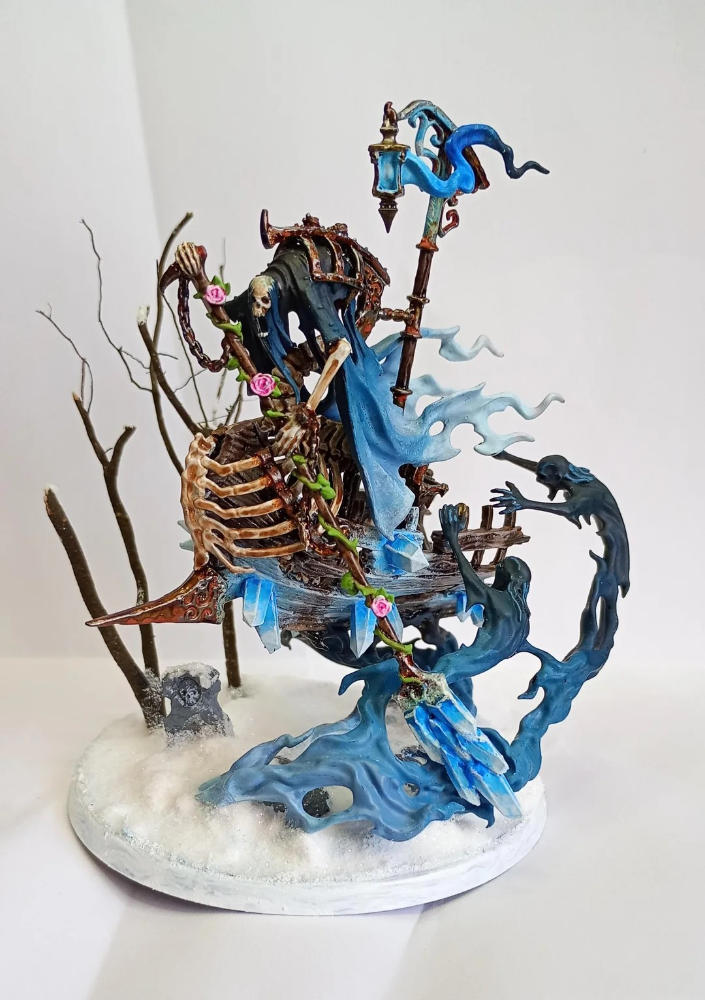
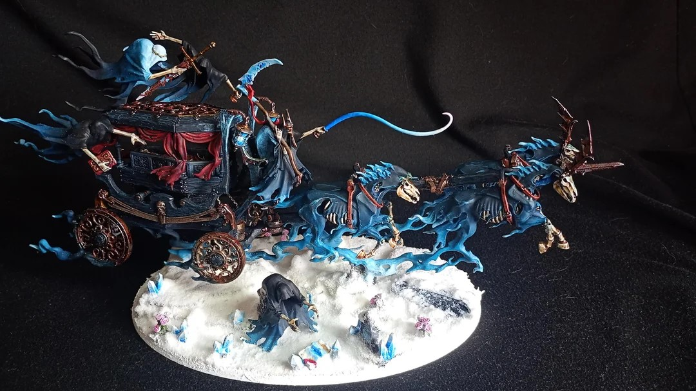
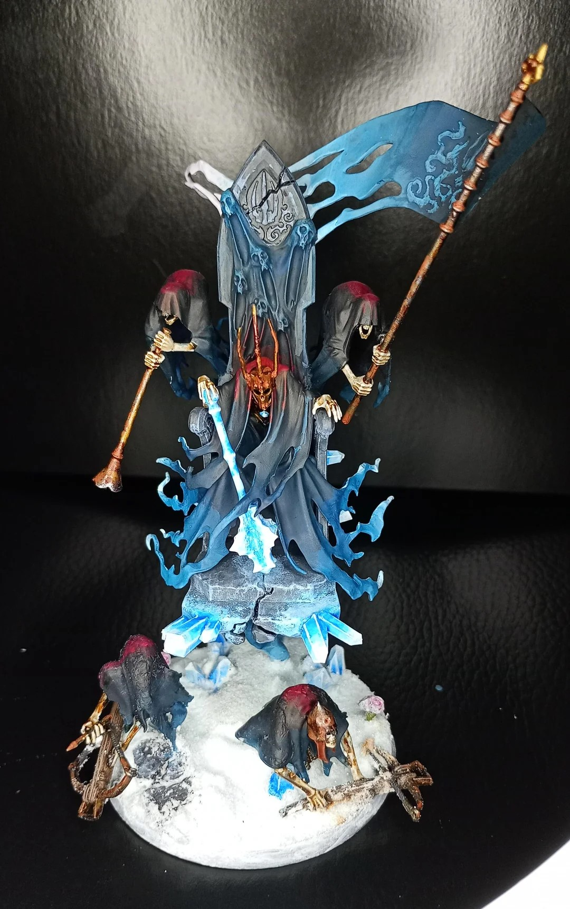
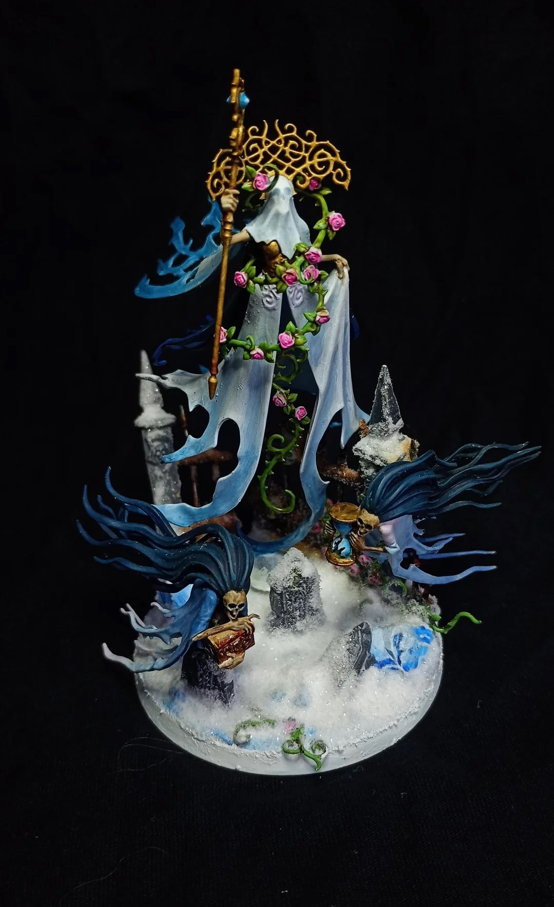

Here I post all of the random other hobby things I do when the ADHD leads the way.




I finished painting a lot of Nighthaunt from Age of Sigmar (Not sponsored). Was really fun and I am personally really satisfied with the results. I am no Golden Demon painter, but I paint really well for tabletop standard.